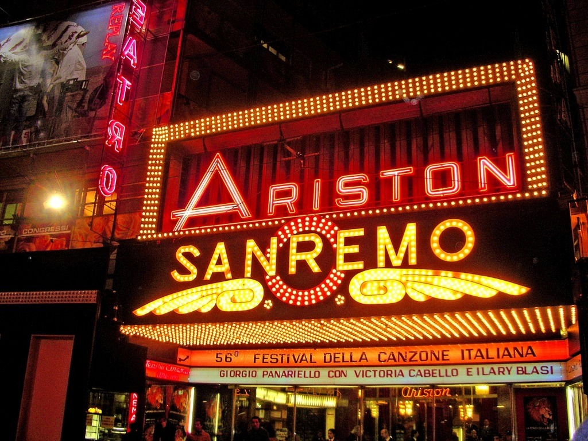

This project has been developed as part of the final assignment for the Knowledge Engineering for the Humanities course at the University of Bologna.
Our work focuses on the Sanremo Music Festival, also known as the Festival della Canzone Italiana, which represents Italy's most famous song contest and one of the country's most widely followed television events.
Established in 1951, this annual competition has played a significant role in shaping Italian popular music and also proved to be much more than a competition, since it reflects changes in the society, culture and the media.
Over the decades, Sanremo has become a cultural institution in its own right, bringing together audiences across generations and representing an enduring part of Italy's cultural identity.

Knowledge Engineering and Computation for the Humanities project, exploring the ArCo cultural heritage knowledge graph.